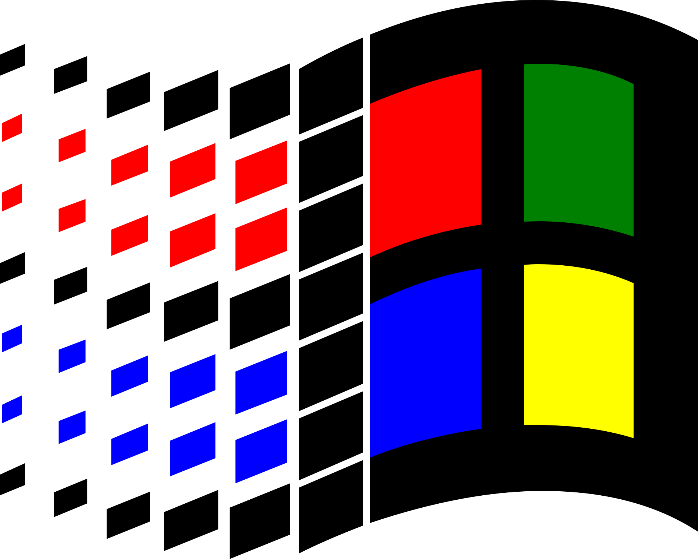

<div id="taskbar">
    <!-- Left Side: Weather -->
    <div id="weather">
        <span id="weather-info">Loading...</span>
    </div>

    <!-- Center: Start Button, Search Bar & Pinned Apps -->
    <div id="taskbar-center">
        <div id="start-button">
            
        </div>

        <div id="search-bar">
            <input type="text" placeholder="Search" disabled>
        </div>

        <div id="pinned-apps">
            
            
            
            
            
            
        </div>
    </div>

    <!-- Right Side: Clock -->
    <div id="taskbar-clock">
        <span id="clock"></span><br>
        <span id="date"></span>
    </div>
</div>
